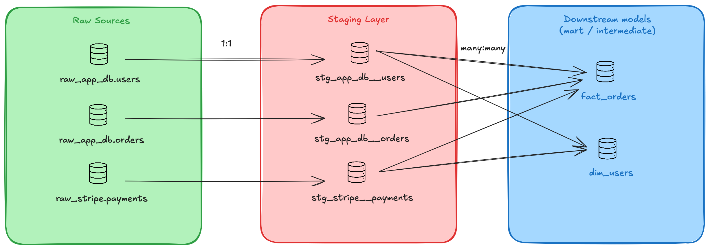

1. Introduction: Not Just a Folder, but a Foundation
If you’re just getting started with dbt, you’ve likely heard that staging models belong in a folder called staging/ and should be named with a stg_ prefix. That advice isn’t wrong—but it’s only the tip of the iceberg.
Staging models aren’t just a naming convention. They’re the first transformation layer in dbt’s modular approach to building analytics workflows. Think of them as the atoms from which you’ll build molecules (dimensions and facts), and eventually complex systems (dashboards, reports, ML features).
In this article, we’ll explore:
- What staging models are, and what makes them different
- Patterns and best practices from dbt’s official docs (plus some honest nuance)
- Real-world examples and folder structure tips
- When to break the rules (base models, unions, etc.)
2. What Is a Staging Model?
In dbt’s model, staging models act as the refined inputs to your downstream logic. They take messy raw data and turn it into well-structured, testable, and reusable models.
Every staging model should in theory:
- Be defined using the
source()function to access raw inputs - Clean and alias column names
- Apply light formatting (casting, coalescing, categorizing)
- Preserve the original grain (i.e. no aggregations)
- Be materialized as a view
✅ Example: stg_application_db__signups.sql
-- models/staging/application_db/stg_application_db__signups.sql
with source as (
-- Use the source function to select from the raw signups table
select * from {{ source('application_db', 'raw_signups') }}
),
renamed_and_casted as (
select
-- Rename columns to snake_case and clarify meaning
signupid as signup_id,
userid as user_id,
email_addr as email_address,
-- Cast timestamp string to a proper timestamp data type
signup_timestamp::timestamp_tz as signed_up_at, -- Use timestamp_tz if timezone info is present/important
-- Handle potential nulls and standardize categorization
coalesce(lower(signup_source), 'unknown') as signup_source_cleaned,
-- Basic categorization based on existing column
case
when lower(device_os) in ('ios', 'android') then 'mobile'
when lower(device_os) in ('windows', 'macos', 'linux') then 'desktop'
else 'other'
end as device_category,
-- Keep original device_os if needed downstream, but maybe cleaned
lower(device_os) as device_os_cleaned
/* Note: We are NOT doing joins or aggregations here.
We preserve the grain: one row per original signup event. */
from source
)
select * from renamed_and_castedThis pattern is intentionally simple. It ensures consistency across the project, promotes reusability, and keeps your pipeline DRY (Don’t Repeat Yourself).
3. Why Staging Models Matter (More Than You Think)
Let’s explore why this seemingly “light” layer is actually a cornerstone of dbt projects.
1. Modular Building Blocks
Staging models let you define atomic pieces of logic, one per table, one per source. You can then compose these into more complex transformations downstream, without duplicating work.
As you can see on the diagram below, we’re supposed to have one staging per source to clean in order to make each source ready for reusable use in the downstream models.

2. Enforced Testing & Clean Contracts
Think of your staging models as defining a “clean contract” for the rest of your dbt project. They make a promise: “Any data you select from me (stg_my_source__my_table) will adhere to certain rules regarding structure, naming, types, and basic data quality.” This contract is crucial for building reliable and maintainable data pipelines. The staging layer is the most effective place to define and enforce this contract for several reasons:
- Early Detection: It’s the first point after raw data ingestion where you can apply meaningful business and structure rules. Catching issues here – like an unexpected
NULLin an ID column or a new value in a status field – prevents them from propagating downstream, where they might cause complex, hard-to-debug failures in multiple mart models or dashboards.
Let’s break down how the specific actions contribute to this contract:
- Apply
not_null,unique, andaccepted_valuestests:- Why Staging? These tests validate the fundamental assumptions about your source data after basic cleaning.
not_null: Ensures key identifiers (likeorder_id,user_id) or critical attributes are always present before they are used in downstream joins or logic. Anot_nulltest onstg_orders.order_idguarantees that any model referencing it can rely on that ID existing.unique: Verifies the grain of the model. Testinguniqueonstg_users.user_idconfirms that, as expected, there is only one row per user in this model. This prevents incorrect results later if downstream models assume this uniqueness (e.g., for joins or counts).accepted_values: Acts as a guardrail for categorical or status fields. Ifstg_payments.payment_methodshould only ever be ‘credit_card’, ‘bank_transfer’, or ‘gift_card’, this test (defined in yourschema.yml) will fail if a new, unexpected value like ‘crypto’ appears in the source. This forces you to acknowledge and handle the new value explicitly, rather than letting it silently break downstreamCASEstatements or filters.
- Enforce standard column names and types:
- Why Staging? Raw data sources are notoriously inconsistent (
orderID,order_id,oid;timestampas string, epoch, or datetime). Staging is your single place to resolve this chaos. - Standard Names: Renaming
oidtoorder_idhere means every downstream model uses the same identifier. This creates a unified vocabulary across your project, making models easier to understand, write, and debug. You fix it once in staging, and everyone benefits. - Standard Types: Casting
amount_stringtonumericorsignup_date_stringtotimestampensures data behaves predictably. Mathematical operations won’t fail, date functions will work correctly, and joins on typed keys are more reliable. This prevents subtle errors that might arise from implicit type conversions by the database later.
- Why Staging? Raw data sources are notoriously inconsistent (
- Ensure consistent grain before aggregation:
- Why Staging? The “grain” defines what each row represents (e.g., one row per order, one row per user login event). Staging models should faithfully represent the grain of their corresponding source table, applying only cleaning and light transformations.
- The Contract: The promise here is: “This staging model delivers data at the same granularity as the source.” For
stg_orders, this means one row per order. - Why it Matters: Aggregations (
SUM,COUNT,AVG) and joins inherently change the grain. Performing these operations prematurely in the staging layer limits how the data can be used downstream. By keeping the original grain,stg_orderscan be used to build multiple downstream models – perhaps one aggregating total order value, another counting orders per customer, and another joining with shipment data – without conflicts. Aggregations and complex joins belong in intermediate or mart layers where the specific analytical grain is intentionally defined. Tests likeuniqueon the primary key help enforce that the intended grain is maintained.
By diligently applying these practices in your staging layer, you create reliable, well-understood, and tested building blocks. This significantly increases trust in your data and makes developing, maintaining, and debugging your downstream transformations much more manageable. You are catching errors early and ensuring consistency from the foundational layer upwards.
3. Shared Language Across Teams
Instead of analysts referencing raw.stripe.payment_v3 and raw.shopify.orders_2021, everyone talks about stg_stripe__payments and stg_shopify__orders. This shared vocabulary improves collaboration and reduces errors. Also, since you can defined standards for the column names and types, you can make sure that no table would contain any id column and every teams would make sure to rename properly the id column to something more consistent such as:
account_idcustomer_idorder_id- etc…
4. Views for a Reason
Staging models are materialized as views by default. They’re not final outputs, so there’s no need to spend warehouse storage or computation on them. Instead, they act as live building blocks that always reflect the freshest available data.
4. Common Patterns in Staging Models
The dbt docs outline a few standard transformations that should happen in staging—and we fully agree. Here are the most common, and when to use them:
| Pattern | Purpose | Example |
|---|---|---|
| ✅ Renaming | Clarity and consistency | id as payment_id |
| ✅ Type Casting | Prevent downstream errors | amount::numeric |
| ✅ Basic Computations | One-time logic like converting cents to dollars | amount / 100.0 |
| ✅ Conditional Bucketing | Simplify recurring case statements | case when ... then 'credit' else 'cash' |
| ✅ Coalescing Nulls | Make booleans and IDs safer | coalesce(is_deleted, false) |
| ❌ Joins | Keep staging models focused. Use base models if needed | |
| ❌ Aggregations | Staging should preserve grain. Aggregate in fct_ or int_ models |
5. Folder and Naming Conventions (With Nuance)
The dbt documentation suggests this structure—and we recommend sticking to it:
models/
├── staging/
│ ├── shopify/
│ │ ├── stg_shopify__orders.sql
│ │ └── stg_shopify__customers.sql
│ ├── stripe/
│ │ └── stg_stripe__payments.sql
✅ Best Practices
- Prefix with
stg_: Keeps your DAG and file system tidy - Double underscores: e.g.
stg_google_analytics__campaignsimproves clarity - Plural naming: Name the model after the entity, not the row (use
orders, notorder) - Group by source system, not business domain or loader
📌 Nuance: For small projects or early prototypes, you might not need this full structure. But as your team and model count grows, sticking to this pattern makes collaboration and automation much easier.
6. When Joins Are Okay: Enter Base Models
Despite the “no joins” rule, there are valid exceptions—and dbt encourages creating base models for them:
✅ Use base models when:
- A system has delete tables (e.g., soft deletes)
- You need to union symmetrical tables from different regions/platforms
- You want to encapsulate join logic once and reuse it across multiple staging models
Structure:
models/staging/shopify/
├── base/
│ ├── base_shopify__customers.sql
│ └── base_shopify__deleted_customers.sql
└── stg_shopify__customers.sql
🔍 Use
ref()in your staging models to pull inbase_models. This preserves modularity and keeps the staging layer clean.
Eventually we would have something like this:
base_shopify__customers.sql:
-- models/staging/shopify/base/base_shopify__customers.sql
with source as (
select * from {{ source('shopify', 'customers') }}
),
customers as (
select
id as customer_id,
first_name,
last_name,
email,
created_at::timestamp as created_at
from source
)
select * from customers
base_shopify__deleted_customers.sql:
-- models/staging/shopify/base/base_shopify__deleted_customers.sql
with source as (
select * from {{ source('shopify', 'deleted_customers') }}
),
deleted_customers as (
select
id as customer_id,
deleted_at::timestamp as deleted_at
from source
)
select * from deleted_customers
stg_shopify__customers.sql:
-- models/staging/shopify/stg_shopify__customers.sql
with customers as (
select * from {{ ref('base_shopify__customers') }}
),
deleted_customers as (
select * from {{ ref('base_shopify__deleted_customers') }}
),
joined as (
select
customers.*,
case
when deleted_customers.deleted_at is not null then true
else false
end as is_deleted
from customers
left join deleted_customers
on customers.customer_id = deleted_customers.customer_id
)
select * from joined
7. Choosing the Right Materialization for Staging Models
In their documentation dbt recommends to materialize staging models as views. This is a great starting point—especially for smaller projects or teams in early development. But as your data volumes grow, you may want to consider switching to incremental or even table depending on your specific use case.
Let’s break down when to use what, and how.
When You Should Materialize as view :
- Your staging model runs quickly and is not expensive to compute
- You want the freshest data at all times
- You’re in development and optimizing for fast feedback
# dbt_project.yml
models:
my_project:
staging:
+materialized: view
Views are lightweight, always up to date, and perfect for most small to medium staging models.
📌 Recommended default for early-stage or smaller data volumes.
When You Should Materialize as incremental :
- You’re dealing with large tables (millions or billions of rows)
- The source is append-only or can be filtered with a date
- You want to optimize compute and avoid reprocessing unchanged data
# dbt_project.yml
models:
my_project:
staging:
+materialized: incremental
-- models/staging/shopify/stg_shopify__orders.sql
with source as (
select * from {{ source('shopify', 'orders') }}
{% if is_incremental() %}
where created_at >= current_date - interval '2 days'
{% endif %}
)
select
id as order_id,
customer_id,
created_at::timestamp as created_at,
total_price::numeric as total_price_usd
from source
With this logic ensures only the last 2 days of data are reprocessed during incremental runs but you should adapt based on your technical and business rules.
When You Should Materialize as table :
- The staging model is relatively static (e.g. list of countries, product catalog)
- You want to snapshot a consistent version of the data to avoid surprises
- You’re fine with the extra storage and rebuild cost
# dbt_project.yml
models:
my_project:
staging:
shopify:
stg_shopify__countries:
+materialized: table
Quick Reference Table
| Use case | Materialization | When to use |
|---|---|---|
| Most default staging models | view | Clean, lightweight logic |
| Large datasets / time-partitioned | incremental | Performance boost with date filters |
| Static reference tables | table | Stability and reuse |
We recommend to adapt the materialization to the source, volume and complexity. Incremental is indeed cost-effective but it induces complexity when you have data changes or when you need to run a backload.
8. Conclusion: The Staging Layer is Your Foundation
Let’s be clear: the effort you invest in your dbt staging layer yields outsized returns. It’s your primary leverage point for transforming messy, inconsistent raw data into a standardized, tested, and reliable asset for your entire organization.
By enforcing naming conventions, correct data types, and crucial data quality checks here, you drastically reduce downstream complexity, debugging time, and potential errors. A robust staging layer isn’t just ‘good practice’; it’s the strategic prerequisite for building scalable, maintainable, and trustworthy analytics pipelines in dbt. Make it count.
What are your own go-to patterns or challenges with staging models? I’d love to hear your thoughts in the comments below!